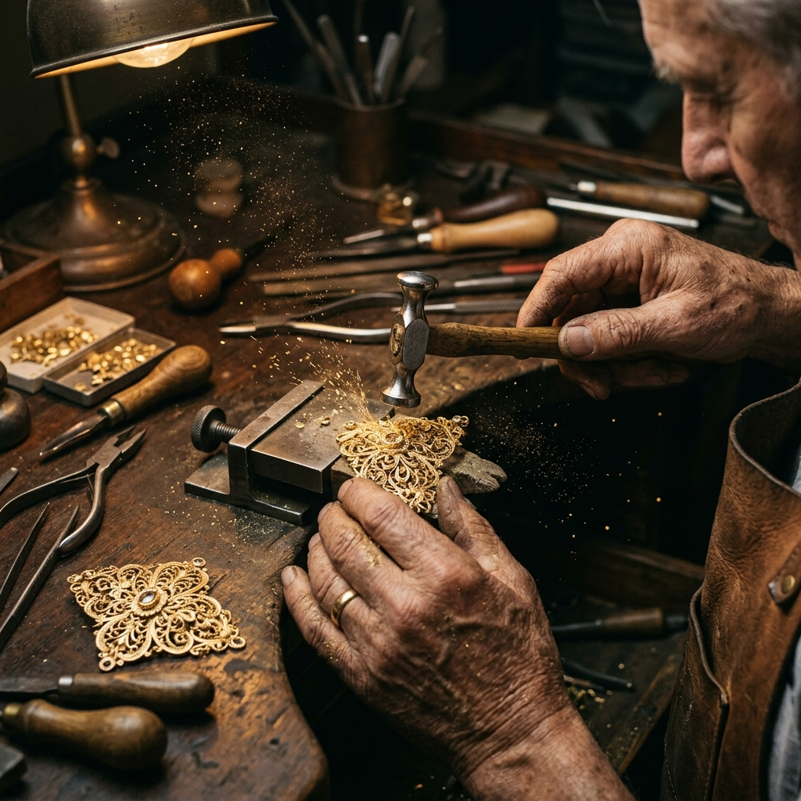
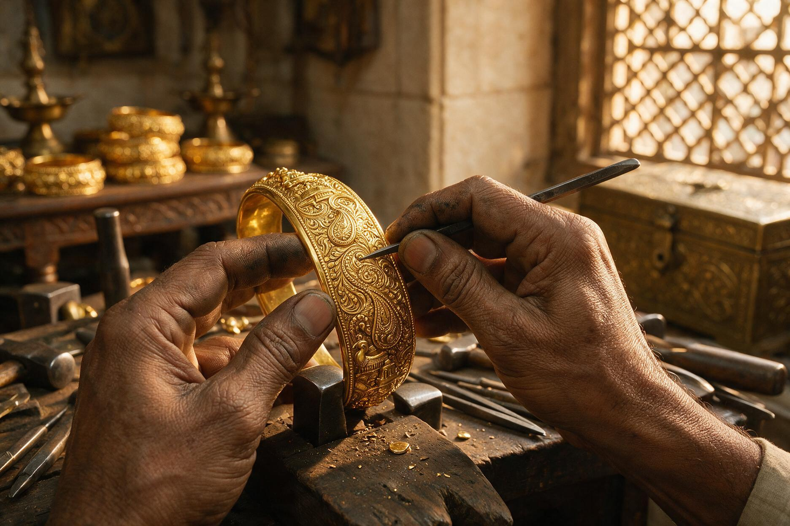
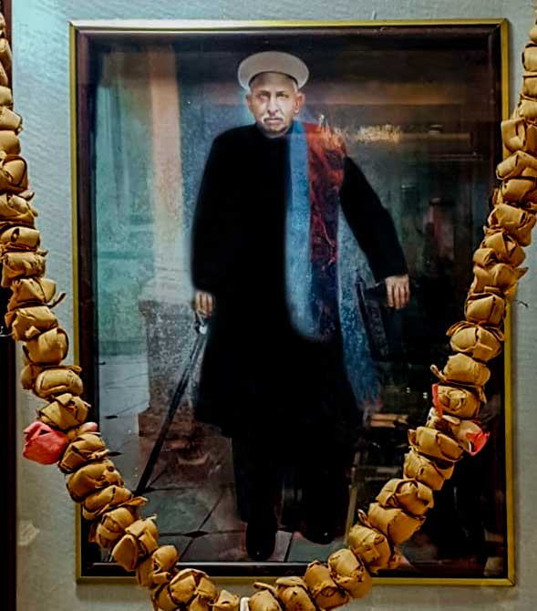
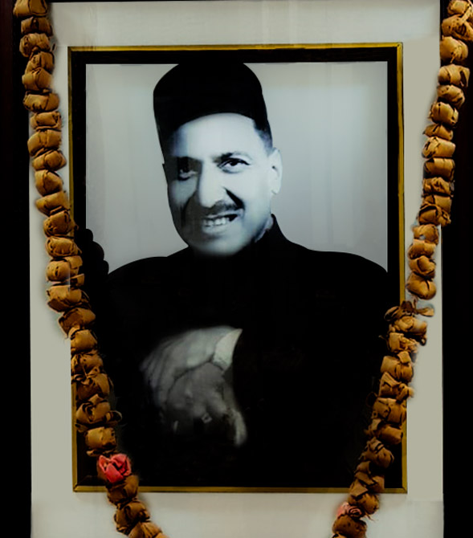
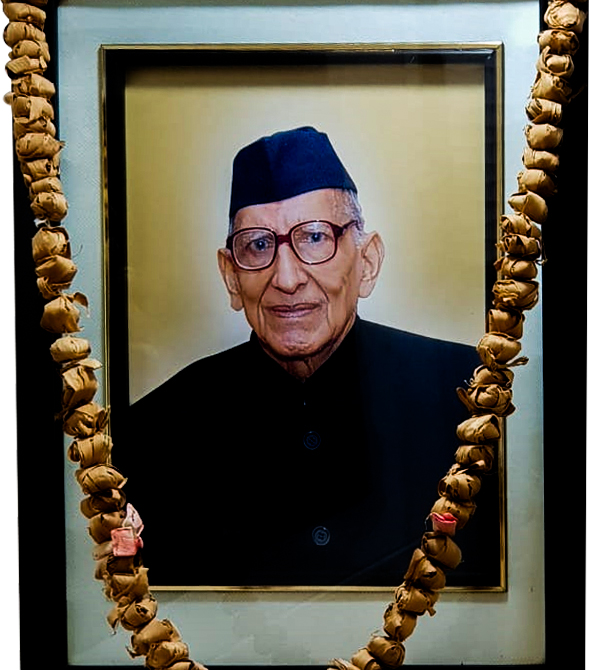

Our Legacy & History
Bridging the traditional zari embroidery craftsmanship of Varanasi with the absolute guarantee of hallmarked gold.
Over a Century of Trust
Founded by Shri Kanhaiya Lal Saraf in the year 1910, Kanhaiya Lal Saraf Jewellers (KLSJ) is one of the oldest establishments in Varanasi. The legacy of Shri K.L. Saraf was carried forward by Shri Mukund Lal Saraf and Shri Balaram Das Saraf, and KLSJ became a leading name of jewellery store in Purvanchal.
Continuing the heritage of the founders, Shri Abhay Agrawal Ji took a huge leap for Kanhaiya Lal Saraf Jewellers and created the brand Trueso in 2006, with the aim to bring the true Hallmark Jewellery Showroom in Varanasi. Soon, Trueso got recognized as the one-stop destination for 100% Hallmarked Jewellery in the entire Eastern U.P.

The Craftsmanship Philosophy
Every piece crafted by the house of Trueso reflects the fine-line attention that carries the legacy of the brand forward. A blend of modern designers and experienced craftsmen merge antique design with modern craftsmanship — Trueso draws the finest artisans from across India to create bespoke designs that entice and allure.

The Founding Lineage
Shri Kanhaiya Lal Saraf
Pioneered standard purity gold rates and certified retail frameworks in Varanasi.

Shri Mukund Lal Saraf
Guided regional expansion, building trusted distribution across Purvanchal.

Shri Balaram Das Saraf
Guided regional expansion, building trusted distribution across Purvanchal.

100% Certification Leadership
Operating two showrooms equipped with karatmeters and insurance alliances. Serving generations of Varanasi families with authenticated BIS certifications.
Our Core Services
Since 1910, Kanhaiya Lal Saraf – Trueso has stood as a guardian of Banaras metalcraft. For over a century, our relationships are built on unyielding standards of metal purity, certified diamonds, transparent practices, and lifetime post-purchase care.
We understand that jewellery buying is a process built on trust — that's why Trueso is committed to providing the finest quality of jewellery in Varanasi. All our jewellery is hallmarked and certified from respective organizations like IGI Certified Gemstones, BIS Hallmarked Gold, and Internationally Certified Diamonds. We also provide free repairing on all gold jewellery, and all our silver jewellery & utensils are 92.5 Hallmarked.
.png)
Free Gold Purity Check
We invite you to bring your old jewelry for computerized gold testing. Utilizing state-of-the-art XRF (X-ray Fluorescence) spectrometers, our showroom offers precise, non-destructive metal composition analysis free of charge.
.png)
Free Jewellery Cleaning Service in Varanasi
Keep your jewelry looking pristine. Trueso provides complimentary ultrasonic cleaning and expert polishing sessions in our showrooms. Bring in your ornaments, and our karigars will safely restore their original, radiant luster.
.png)
Customized Jewellery
Bring your vision to life. Collaborate directly with our design consultants and master silversmiths to create a bespoke piece of jewelry. From initial hand-sketches to 3D casting and hand-beaten gold detailing, we craft tailored legacy designs.
.png)
0% Deduction on Old Gold Exchange
Enjoy full valuation for your old gold assets. We offer a transparent, premium 100% value exchange policy for old gold ornaments against our new design collections. There are zero value deductions based on purity calculations.
.png)
Free Repairing Upto 5 Years
We stand behind the durability of our creations. Trueso offers a comprehensive 5-year post-purchase service warranty. Enjoy free repairs, sizing modifications, security clasp reinforcements, and gemstone tighteners.
.png)
Free Jewellery Insurance in Varanasi
Shop with complete peace of mind. Every qualifying purchase at our Varanasi showrooms comes with complimentary jewellery insurance, protecting your investment against loss, theft, and accidental damage.
.png)
Free Gold Testing
Bring in your gold ornaments for a complimentary purity test at our Varanasi showrooms, verified using precise, non-destructive testing equipment before every purchase or exchange.
.png)
Jewellery Repairing Service in Varanasi
Our in-house karigars offer expert repair services at our Varanasi showrooms, from clasp and chain fixes to stone re-setting, restoring every piece to its original condition.